Spreading Card Animation in Flutter
Recently I have come across a youtube video ImNotGoodEnough.js by Hyperplexed explaining on how to overcome imposter syndrome. I am amazed by the example he showed in the video and his way of breaking down complex problems has really opened my eyes. Most of the time, I have been relied on various package to finish the tasks assigned with tight deadline. So what if I actually have time to invest into it, can I make something that will actually impress the others just like how I am impressed by the spreading card animation shown in the video? With that thought in mind, I decided to put my previous experience in Flutter to use. I tried to replicate the animation by using Flutter instead of HTML, CSS and Javascript . It may not be as impressive as the video, but I consider this as a baby step for me on the way of improvement.
First of all, create a simple card by styling a Container widget.
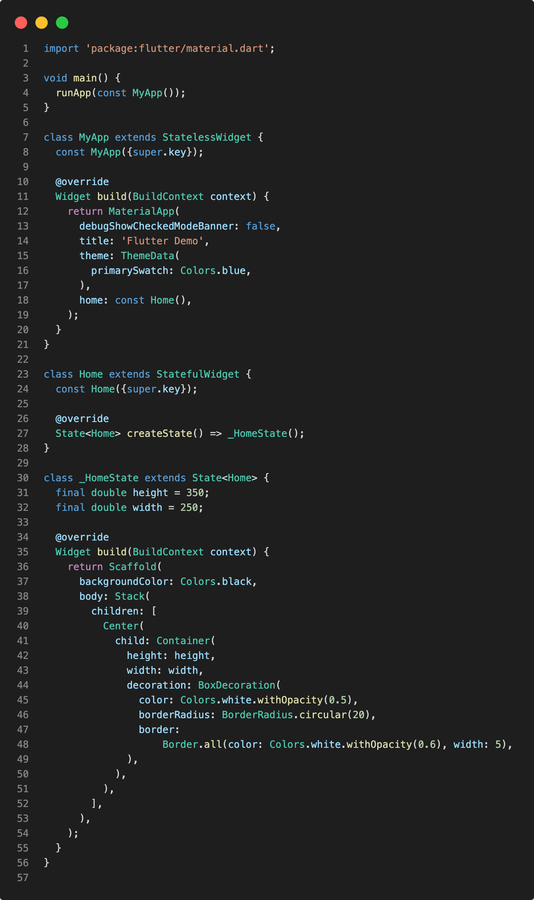 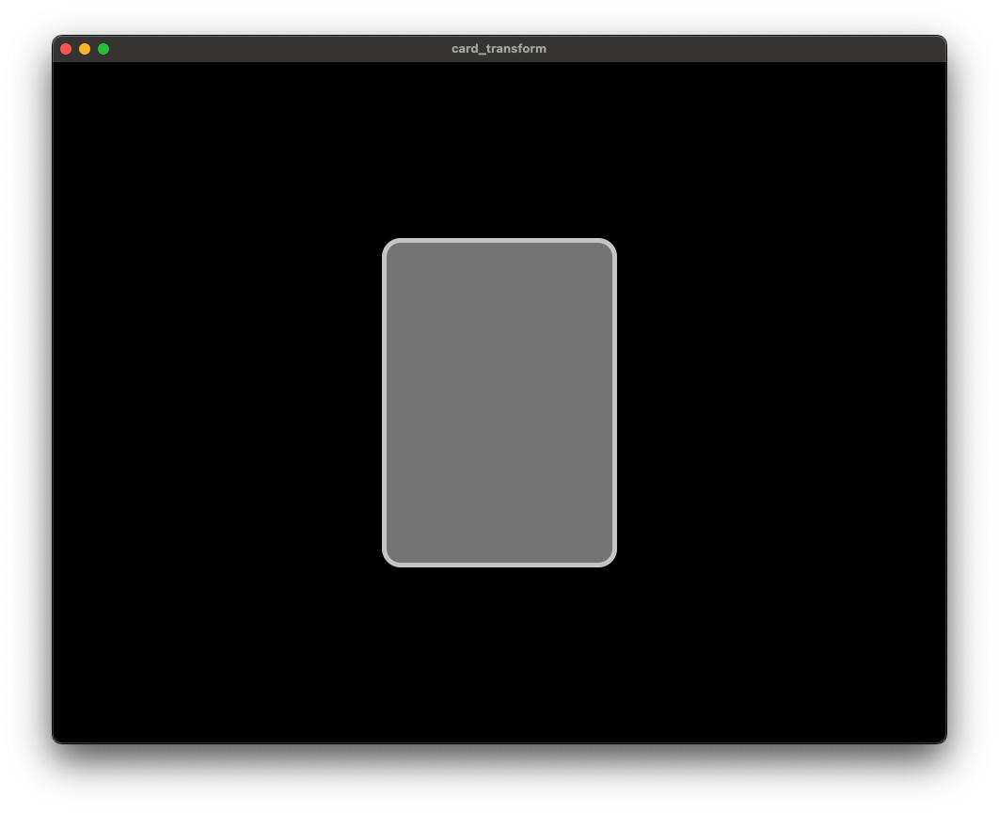To make use of animation, the HomeState need to use TickerProviderStateMixin. Then declare all the necessary variables for animation, i.e. Duration for animation, AnimationController, Animation<double> for rotation and Animation<Offset> for translation. Rotation is performed radian value. We can import 'dart:math' library and try to convert from degree into radian.
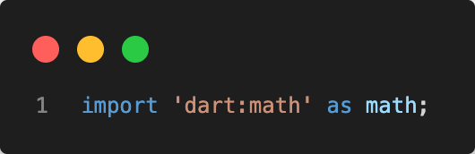 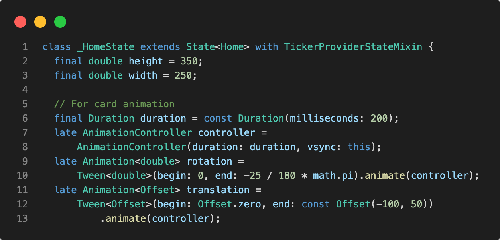Next, wrap the Container widget with AnimatedBuilder, Transform.translate and Transform.rotate widgets to apply the animation.

In case we need to see the final position after animation, we can add controller.forward() in the initState. This was useful when we want to check on the final design when adjusting multiple cards later.
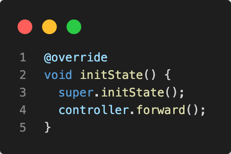 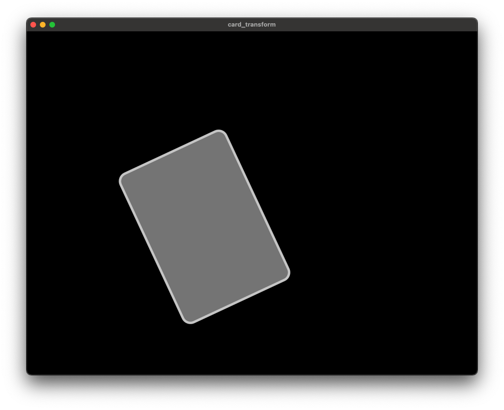Wrap the Container widget with InkWell and pass in onHover. When the mouse enter the InkWell region, onHover value will be true. Call controller.forward() to spread the card outwards and controller.reverse() to move the card back to the original position.
Note: If you have the initState in previous steps, you can comment or remove that out so that the card is at the center of the screen when you run the app.
Note 2: If you cannot see the changes, try to restart the app instead of hot reload.
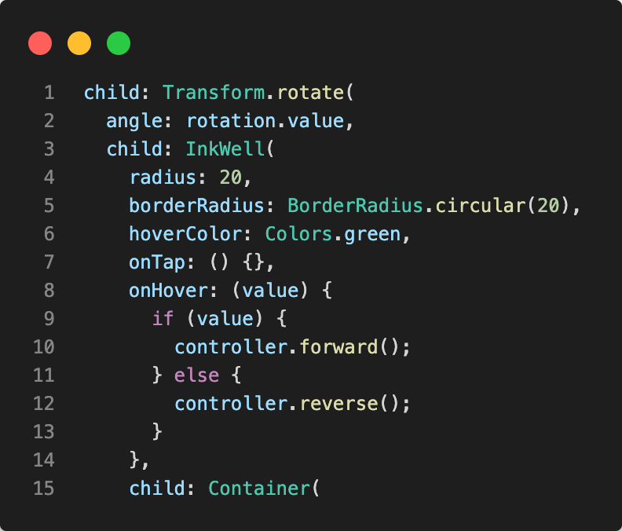 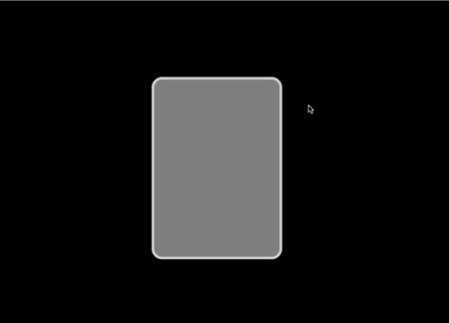Now a single card animation has been completed. What's next? We need to create a stack of cards. Those cards need to have spread into different position and rotate differently in an arc. To make our life easier, we will create a model called CardAnimation that stores the variables that needed for animation. Named constructor is used so that we can just pass in the controller, position and degree when creating the model.
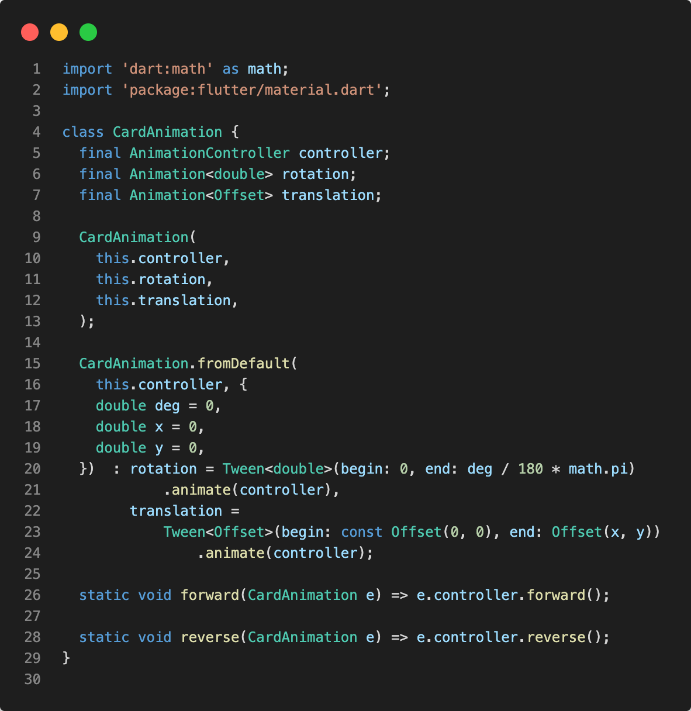Now that we have the model ready. We can extract the widgets in Stack into a separated widget. A isBig parameter is used to determine the size of the card.
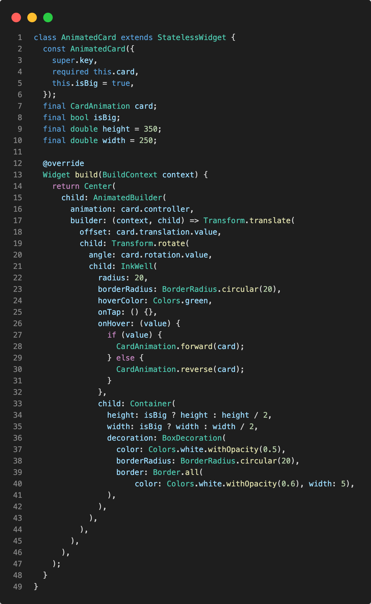The Home widget has been simplified and everything should still works.
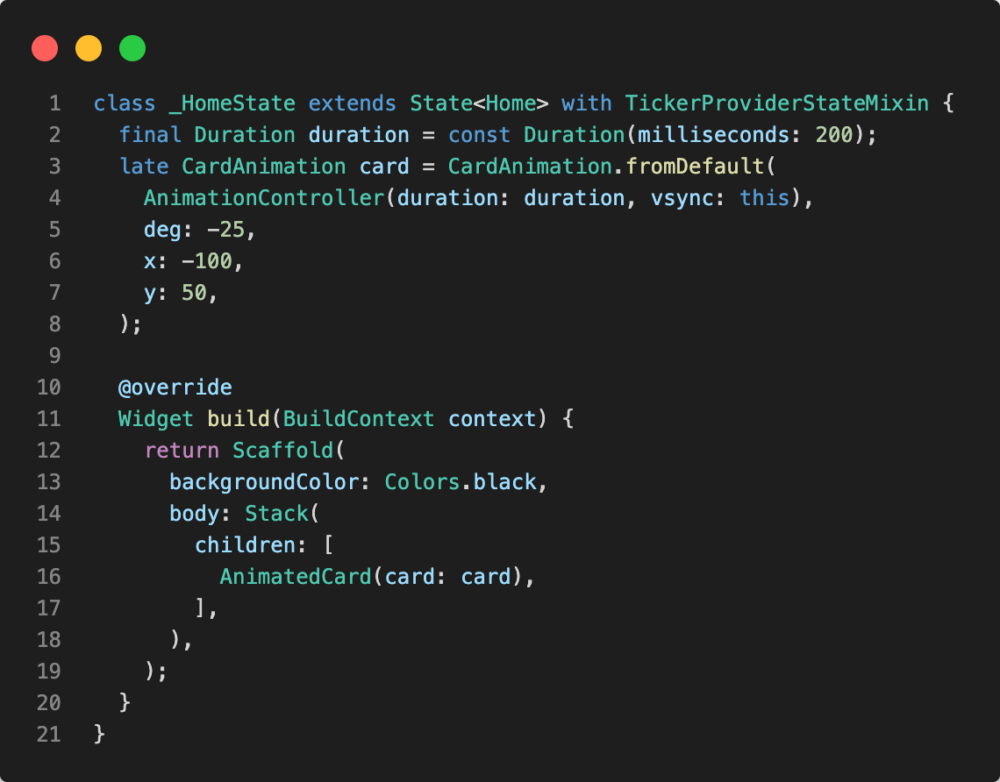Next, declare all the rotation and translation in the state object. Then map from the model list to AnimatedCard widgets in build method.
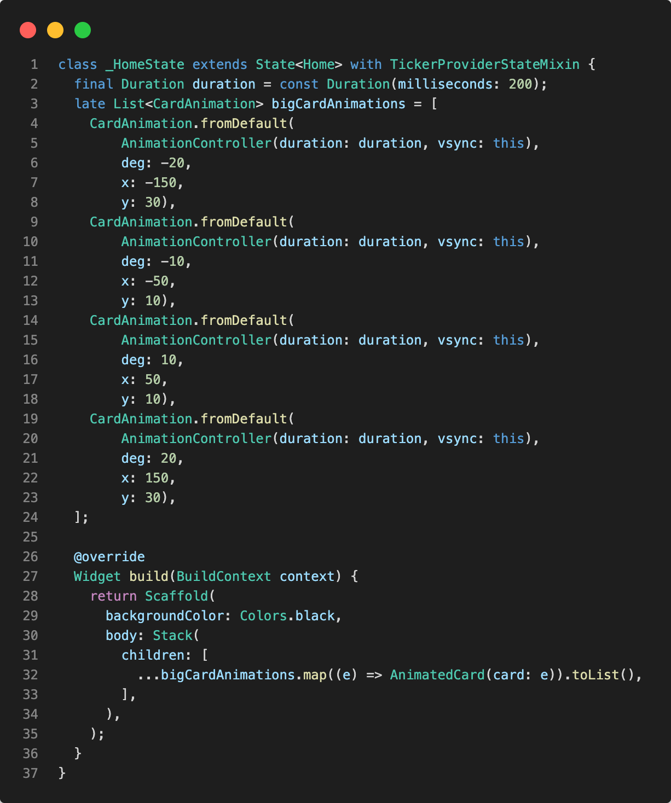However, it is not working as expected. The cards are not spreading out at the same time. Because we are calling individual AnimationController when calling the .forward() method. So only the hovered card triggers the animation.
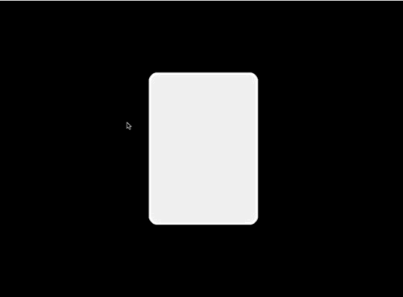To solve that, we pass the cardList into the AnimatedCard widget and update the InkWell onHover. Whenever a card is hovered, loop through the card list and call the .forward() methods. The method is passed to forEach as a tear off.
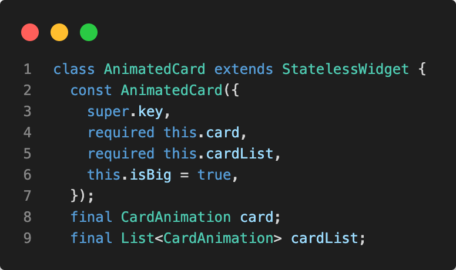 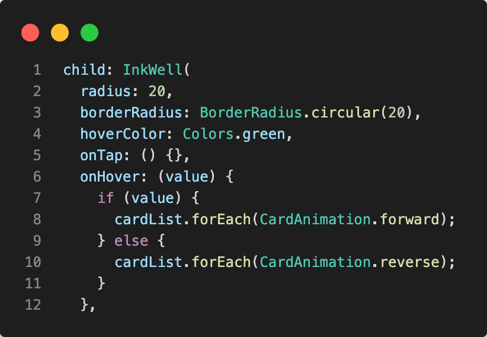Update the build method in Home widget as well. Then the cards should all be spreading when we hover over the cards.
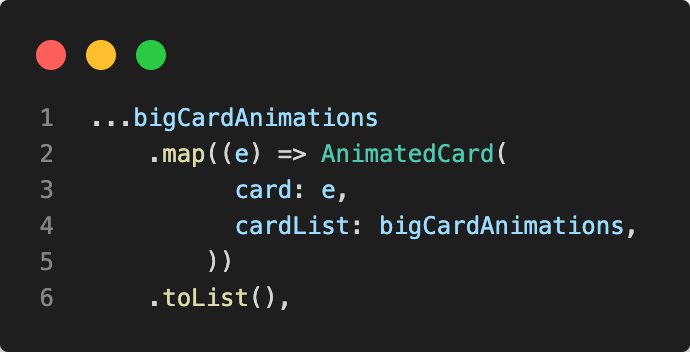The rest is pretty simple as the small card is the same logic. Create another list with different value in arguments then just pass in isBig: false for small cards and updated the cardList to combine both list.


Hooray, we have made the card spreading animation. I am sure there is another way or even better way. Do not hesitate to leave me a message if so. I'm more than willing to learn. Have fun creating together!